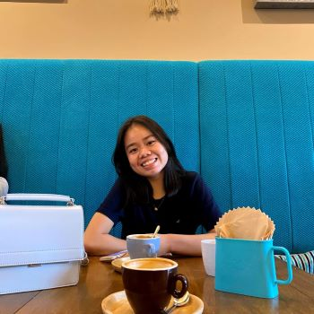

Oh hi, hello there, I'm Elicia
Ngee Ann Polytechnic, School of ICT Immersive Media

Hey, Elicia here! I am currently a 17 year old year 1 student pursuing a diploma in immersive media in the school of Infocomm
and Technology Ngee Ann Polytechnic. I am very passionate about art and would like to become a graphic designer or app developer
in the near future. I am extremely enthusiastic about creating new, interesting and innovative art. I love to exploring with
different kinds of art mediums such as paints, pencils and pen. I am interested and determined to explore the digital art world next!
I am a friendly, dedicated and very organized individual. I am very receptive to feedbackand I strive to reach my personal best.
During my free time, I like to doodle, play sports like badminton and watch Netflix. Hope you will enjoy looking through my portfolio.
Cheers!